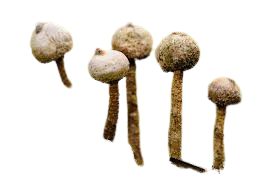
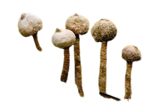

Descripción morfológica
Tulostoma brumale es un hongo saprófito perteneciente a la familia Agaricaceae. Se reconoce fácilmente por su aspecto esférico y pedicelado, lo que le confiere un aspecto de "hongo sobre bastón". El cuerpo fructífero (gasterocarpo) es globoso, de color beige a marrón claro, con una abertura apical circular que libera esporas en estado maduro. El estípite (tallo) es largo, delgado y fibroso, con textura rugosa y color ocre oscuro.
Detalles anatómicos
- Gleba: La masa interna que contiene las esporas es inicialmente blanca, volviéndose marrón y pulverulenta al madurar.
- Peridio: Capa externa dura y resistente, que protege las esporas hasta su liberación.
- Esporas: Microscópicas, esféricas y ornamentadas, miden 4-6 µm de diámetro, con paredes gruesas para resistir condiciones áridas.
Distribución y hábitat
Tulostoma brumale se distribuye ampliamente en zonas templadas del hemisferio norte, especialmente en Europa, América del Norte y Asia. Crece sobre suelos arenosos, calcáreos o pobres en materia orgánica, a menudo en hábitats xerofíticos como dunas, pastizales secos, zonas urbanas o áreas abiertas con escasa vegetación. Aparece principalmente en otoño e invierno.
Hábitats específicos
- Dunas costeras: Coloniza zonas estables con vegetación escasa, como las dunas grises europeas.
- Estepas y páramos: Sobrevive en suelos alcalinos con alta insolación.
- Entornos urbanos: Adaptado a jardines abandonados o grietas en aceras, demostrando alta resiliencia.
Ciclo de vida y reproducción
Este hongo desarrolla su cuerpo fructífero en la superficie del suelo, madurando lentamente durante los meses fríos. La apertura apical del esporocarpo permite la dispersión de esporas por el viento (anemofilia). Su ciclo vital es anual, aunque los cuerpos secos pueden permanecer visibles durante meses. No tiene fase sexual visible, y se reproduce mediante esporas liberadas desde el endoperidio.
Etapas clave
- Germinación: Las esporas requieren humedad temporal y suelos poco compactos para germinar.
- Desarrollo del micelio: Red subterránea de hifas que se extiende en busca de materia orgánica en descomposición.
- Formación del esporocarpo: Inducida por bajas temperaturas y humedad reducida.
Usos principales
- 🍄 Ecológico: Contribuye a la descomposición de materia orgánica en suelos pobres, favoreciendo el reciclaje de nutrientes y mejorando la estructura del suelo.
- 🔬 Científico: Interesa a micólogos y ecólogos por su adaptación a hábitats áridos, su morfología especializada y su papel en estudios de dispersión de esporas por viento.
- 🌍 Indicador ambiental: Su presencia puede reflejar condiciones edáficas específicas (suelos alcalinos y no perturbados) y bajo impacto humano en ciertas zonas. Es bioindicador de ecosistemas secos y estables.
Curiosidades y datos adicionales
- Resistencia extrema: Los esporocarpos secos pueden soportar temperaturas bajo cero y reactivarse con la humedad.
- Historia taxonómica: Fue descrito por primera vez en 1805 por el micólogo Christiaan Hendrik Persoon.
- Nombre común: En inglés se le llama "Winter Stalkball" por su aparición en estaciones frías.
- Relación con otros hongos: Comparte hábitat con especies como Pisolithus arrhizus, otro hongo adaptado a suelos áridos.
Precauciones y conservación
Aunque no es tóxico, Tulostoma brumale no tiene valor culinario debido a su textura leñosa y tamaño reducido. Su recolección excesiva en dunas y hábitats frágiles puede amenazar sus poblaciones. Se recomienda:
- Evitar pisar suelos arenosos donde crece para no dañar el micelio subterráneo.
- Documentar su presencia con fotografías en lugar de recolectar ejemplares.